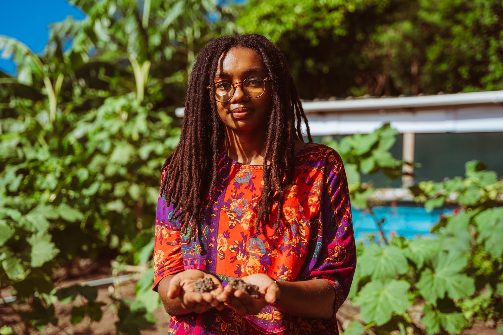

Con un clima incierto y menos agua, mujeres agricultoras de Providencia sostienen la soberanía alimentaria en su territorio

Las lluvias impredecibles y los largos periodos de sequía han provocado la pérdida de cultivos de ciclo corto en la isla de Providencia (Colombia). Sandía, melón, pepino y maíz están entre los más afectados. Para las agricultoras raizales, esta inestabilidad climática reduce la producción, deteriora la calidad de los alimentos y eleva los costos.
"Esto profundiza desigualdades, porque cada vez será más difícil sostener la producción local y acceder a lo que se cultiva", afirma Paola James Garcés, de 27 años, fundadora de Felicity Village, un proyecto familiar que comenzó su madre en 2018 y que ella asumió desde 2021, en el que reúnen cultivos tradicionales con prácticas sostenibles.
En estos años de trabajo en la iniciativa, esta joven ha visto de cerca cómo los periodos prolongados de sequía deterioran los bosques y los árboles frutales. "La falta de lluvia implica que la tierra quede más expuesta, que los rayos del sol peguen directamente y que los microorganismos se reduzcan. Entonces, la biodiversidad del suelo y lo que puede crecer también se ve afectado", explica.

En Felicity Village trabajan con árboles de crecimiento lento que necesitan riego constante. "Cuando no hay agua, toca suplirla, y eso implica mayor esfuerzo y una planificación adicional para cubrir la temporada que se suponía sería de lluvia", asegura.
Para enfrentar los momentos de escasez, Paola y su familia recurren a formas tradicionales de recolección de agua, como captarla desde el techo del galpón y dirigirla hacia contenedores. "Pero aun así sigue siendo una limitante, porque los contenedores no son lo suficientemente grandes para sostenernos durante toda la sequía", afirma.
Por eso, están considerando construir una cisterna de mayor capacidad que les permita extender el riego durante los meses más críticos. "El agua de lluvia es lo que más funciona, pero recogerla, almacenarla y administrarla exige tiempo, recursos y un cuidado casi diario", señala.

Hasta hace algunos años, las familias agricultoras de la isla podían calcular con cierta facilidad las temporadas de lluvia y sequía para organizar el inicio de la siembra y la cosecha. Como lo describe Paola, durante la primera mitad del año todo se veía seco, anaranjado, como si no hubiera mucho bosque; y luego, a partir de junio, venía una temporada de lluvia en la que cambiaba el aspecto de la isla, todo se hacía más verde, más frondoso, y el bosque se notaba más. Las cosas han cambiado.
"Las sequías prolongadas han impactado sobre todo el plátano y banano, porque la planta no se desarrolla bien: queda pequeña, reducida, los frutos no alcanzan un tamaño considerable. Si bien no necesitan tanta agua, la sequía extrema sí los debilita", cuenta Paola.
Otros cultivos también se han visto afectados. El maracuyá y el mango tardaron más tiempo en alcanzar su punto de maduración, mientras que los pimentones requirieron más riego que el año pasado. Y cuando finalmente llega la lluvia, ocurre el efecto contrario, algunas plantas no resisten la acumulación repentina de agua y terminan ahogándose.


Saberes ancestrales frente a un clima cambiante
En Providencia existe una programación cuidadosa del calendario agrícola que consiste en evitar siembras en meses como marzo o mayo, cuando se sabe que muchos cultivos tienden a secarse, y elegir en cambio especies más resistentes según la época del año.
Otro de los saberes ancestrales más antiguos que se mantienen es sembrar de acuerdo con las fases de la luna. A esto se suma la asociación de cultivos para generar sombra y protección natural: árboles que resguardan plantas más pequeñas durante la sequía, con lo que se replica el comportamiento de los bosques no intervenidos.
Sin embargo, el clima se ha vuelto más difícil de predecir. "Ahora es más bien una expectativa: estar pendientes, ver si va a llover o no. Hay muchas dudas sobre si hacer o no hacer ciertas cosas, lo que genera mucha improvisación", cuenta Marcela Ampudia Sjogreen, secretaria de Agricultura y Pesca de Providencia y Santa Catalina.

Antes de asumir su cargo actual, Marcela pasó más de diez años acompañando las acciones agrícolas de su familia, con quienes hoy impulsa un proyecto para recuperar el cultivo de caña, mientras mantiene su propia huerta en casa.
Esa combinación de experiencia institucional y trabajo directo con la tierra le han permitido entender de primera mano cómo han cambiado las condiciones climáticas en la isla. Marcela sabía en qué momento sembrar para aprovechar las temporadas del año. Pero la variabilidad climática la ha obligado a replantear su manera de trabajar. Ahora debe tener todas las herramientas listas, mantenerse atenta al cielo y actuar apenas aparece una señal mínima de lluvia.
En un territorio donde la agricultura depende casi por completo de este recurso hídrico —sin ríos caudalosos ni fuentes subterráneas aptas para riego—, cada variación en el calendario natural representa un riesgo directo para la seguridad alimentaria del pueblo raizal, comunidad étnica afrodescendiente ancestral del Archipiélago de San Andrés, Providencia y Santa Catalina, que históricamente ha estado ligada a la tierra y al mar.

Una memoria viva
Aunque hoy, ante la incertidumbre, toda acción para guardar el agua se ha vuelto urgente y angustiosa, Marcela cuenta que las estrategias de recolección y cuidado de este recurso forman parte de la memoria viva del pueblo raizal.
Recuerda cuando sus abuelos caminaban desde Santa Catalina hasta Aguadulce para lavar en el arroyo, o cuando las mujeres cargaban agua en pimpinas para cocinar. "Además, tener la cisterna de agua dulce era sagrado. Nadie podía tocarla porque era la de consumo", dice.
Sin embargo, después del huracán Iota, que el 16 de noviembre de 2020 destruyó el 98 % de la infraestructura de Providencia, gran parte de las cisternas tradicionales fueron demolidas por el Gobierno, pues su ubicación no se ajustaba al diseño de las casas prefabricadas instaladas en la reconstrucción.
"Hoy, contar con una cisterna es casi un privilegio. Su fabricación es costosa y pocos hogares pueden asumir ese gasto. Por eso, muchas familias han optado por tanques de 2.000 o 5.000 litros, una alternativa más accesible, pero mucho menos eficiente", explica Marcela.
A pesar de esto, las prácticas de ahorro de agua no han desaparecido. Evolucionaron sin perder su esencia: reutilizar el agua de la lavadora, captar lluvia en tanques elevados, decidir manualmente cuándo desechar el agua, mantener poncheras en la cocina para evitar desperdicios y guardar envases y recipientes para múltiples usos.
Lo que desde fuera podría parecer simple cotidianidad es, para la comunidad raizal, una estrategia histórica de adaptación a la escasez. Un sistema propio de ahorro y resistencia. "Somos una comunidad consciente de los recursos limitados que tenemos", afirma Marcela.
La adaptación al clima en Providencia, entonces, no comenzó con el cambio climático, sino que nace de una larga tradición isleña en la que el manejo del agua, la siembra y el cuidado del territorio siempre han requerido observación del entorno y un uso consciente de los recursos.
Prepararse para lo que viene
En los próximos años, el archipiélago enfrentará condiciones climáticas cada vez más difíciles y los datos lo confirman.
De acuerdo con información del Instituto de Hidrología, Meteorología y Estudios Ambientales (Ideam), San Andrés, Providencia y Santa Catalina es el departamento con mayor riesgo por el cambio climático del país, debido a su alta exposición a fenómenos extremos, la vulnerabilidad de sus ecosistemas y la fragilidad de su abastecimiento de agua.
Según registros de la misma institución, el archipiélago tiene un ciclo de lluvias unimodal. La temporada seca va de diciembre a mayo y la lluviosa de junio a noviembre, con un promedio anual cercano a 1.945 milímetros.
Sin embargo, tal como lo perciben los lugareños, los patrones están cambiando. La Tercera Comunicación Nacional de Cambio Climático del Ideam señala que el archipiélago enfrenta una reducción acelerada de sus lluvias. Para el periodo más cercano, 2011-2040, las precipitaciones podrían disminuir hasta en un 30,2 % respecto al promedio histórico entre 1976 y 2005.
"Si llueve menos, los agricultores tendrán dificultades para sostener sus cultivos. Los arroyos perderán caudal. Los acuíferos no se recargarán lo suficiente. Y los métodos tradicionales de los isleños para almacenar agua en cisternas y tanques también se verán comprometidos. Esto nos hace pensar: ¿cómo nos vamos a adaptar a lo que se viene?", dice Tomás Guerrero, coordinador de Proyectos Hídricos de Coralina.

La Cuarta Comunicación Nacional de Cambio Climático del Ideam, publicada este año, tiene una perspectiva diferente. Comparando las proyecciones para 2021-2050 con el periodo histórico 1981-2010, el documento estima que en el trimestre de marzo-abril-mayo las lluvias podrían reducirse en más de un 20 % en el archipiélago, mientras que para junio-julio-agosto anticipa aumentos superiores al 40 %, situación que empeoraría para la segunda mitad de este siglo XXI.
Para Guerrero, este contraste es significativo. "La tercera comunicación hablaba de un déficit generalizado durante todos los años. La cuarta dice que habrá meses mucho más secos y otros mucho más lluviosos, lo que puede generar inundaciones, pérdida de cultivos, deslizamientos y otros problemas", explica.
Al revisar las cifras por meses, Guerrero también encontró un patrón llamativo. "Según la cuarta comunicación, los meses que actualmente son secos podrían ser lluviosos hacia 2040. Es como si se invirtiera la configuración de precipitaciones que normalmente se da en la isla", afirma.
Esos cambios ya se sienten en las parcelas de mujeres como Paola y Marcela. "Antes planificábamos las actividades más exigentes, o las que requerían más agua, para mayo y junio, cuando empezaban las lluvias. Ahora es intermitente, ya no es tan fijo. Entonces toca estar pendientes del cielo, de las lluvias y hasta de la luna", dice la secretaria de Agricultura y Pesca de Providencia y Santa Catalina.
El agua que sostiene la agricultura
En Providencia, el acceso al agua dulce está determinado por la geografía misma de la isla. A diferencia de San Andrés —plana, densamente poblada y dependiente casi exclusivamente de un acuífero pequeño y vulnerable—, Providencia tiene montañas, microcuencas y manantiales.
Esa configuración topográfica, explica Guerrero, "marca una diferencia muy grande, porque en Providencia hay posibilidad de que existan fuentes superficiales de agua". Es decir, arroyos y nacimientos que, aunque temporales, abastecen a la población y sostienen gran parte de la agricultura local.
De acuerdo con una cartilla realizada por Coralina y el Fondo Patrimonio Natural en 2011, ese sistema nace en The Peak, el corazón hídrico de la isla. Allí se originan los principales nacimientos: Bowden, San Felipe, Lazzy Hill, Fresh Water, Gammadith Gully (Bottom House), Smooth Water Bay y Bailey. También surgen manantiales como Spring Gully, Big Gully o Provision Ground.

Además, está la represa de Fresh Water Bay, que, de acuerdo con la misma cartilla, podría abastecer el uso doméstico de la población, pero actualmente enfrenta graves problemas que reducen su capacidad. Según Guerrero, esta represa "ha sufrido durante muchos años un proceso de sedimentación que disminuyó su capacidad de almacenar agua". Aunque recientemente se limpió el fondo, no representa una solución para los agricultores, ya que está destinada principalmente al consumo humano.
Los agricultores "dependen principalmente de los arroyos", asegura Guerrero. En Providencia, pese a que pueden tener mayor o menor caudal en ciertas temporadas del año, pueden aprovecharlos, a diferencia de San Andrés, donde la agricultura depende únicamente de la lluvia y solo se puede cultivar en temporada húmeda.
Soberanía alimentaria en riesgo
En el Archipiélago de San Andrés, Providencia y Santa Catalina, aunque existe producción agrícola local, esta no alcanza para abastecer de manera constante a la población.
Según el Plan Departamental de Extensión Agropecuaria 2024-2027 presentado por la Gobernación del archipiélago, el coco domina la producción agrícola con un 24,96 %, seguido por la yuca (19,15 %), la sandía (15,85 %) y el plátano (12,65 %), mientras que cultivos como batata, papaya, banano y ñame completan una canasta variada y resistente.
Esta es una imagen alentadora en términos de diversidad, pero insuficiente para cubrir la demanda alimentaria del territorio. Por ello, el archipiélago depende cada vez más del abastecimiento externo, principalmente de alimentos que llegan por vía marítima desde la Colombia continental.
Esa dependencia hace que el archipiélago sea especialmente vulnerable al cambio climático, porque la comunidad no puede recurrir rápidamente a su producción local para compensar la escasez y garantizar alimentos frescos en momentos de huracanes, lluvias extremas o cualquier fenómeno asociado al cambio climático. Así, la inseguridad alimentaria se intensifica y la capacidad de adaptación queda limitada.
Además, esta situación repercute en la salud de la población. Guerrero explica que la dieta local está basada en carbohidratos, mientras que el consumo de verduras y frutas es bajo, debido a sus altos costos y a la limitada disponibilidad de productos frescos. Esto genera problemas de obesidad y déficit de vitaminas, y se suma a los retos que plantea el cambio climático para garantizar alimentos nutritivos en el futuro.
"La canasta familiar de las islas está compuesta por muchas cosas que no son de aquí. Aún así conservamos muchas recetas que requieren insumos locales: el coco, la yuca, la batata, la auyama. Son productos que no se pueden dejar perder porque con ellos hacemos platos tradicionales como el rundown (un guiso típico del Caribe insular hecho a base de pescado o mariscos cocidos, plátano, yuca y ñame, todo cocinado en leche de coco)", señala Marcela.

La crisis agrícola
La agricultura local empezó a diluirse, según Marcela, desde la declaración de Puerto Libre en 1953, año en el que se abrió la puerta a la importación masiva de alimentos sin aranceles. El mercado se volcó a satisfacer al turismo y entraron barcos y aviones cargados de productos que desplazaron lo local.
La isla nunca resolvió necesidades básicas como sistemas de riego, acceso al agua y recursos suficientes para escalar la producción. Esa infraestructura ausente sigue limitando cualquier intento de reactivar la agricultura a gran escala.
Hace años, Guerrero intentó experimentar con la agricultura no convencional. Junto con un socio, creó un cultivo hidropónico en San Andrés, donde producía tomate, lechuga, cilantro y cebollín utilizando un sistema NFT (Nutrient Film Technique), una tecnología que recircula el agua de manera continua y eficiente. Gracias a este modelo, lograban cosecha todos los días del año, sin depender completamente de las lluvias.
Pero cuando empezaron a consolidarse, se toparon con un problema que para él resume la crisis agrícola del archipiélago. "Existe una normativa local que dice que cuando cierto alimento se está produciendo en cantidades suficientes para abastecer a la isla, se debe frenar automáticamente su importación y priorizar la compra local. Pero eso nunca se ha aplicado”, cuenta. La normativa a la que hace referencia es la Ley 915 de 2004, específicamente el artículo 42.
Guerrero recuerda una temporada en la que lograron producir suficientes lechugas para el mercado local, pero este mismo producto seguía llegando desde Estados Unidos y otras regiones de Colombia.
El negocio hidropónico terminó por la combinación de normativas ineficaces, falta de visión en la gestión agrícola, barreras comerciales, dependencia de insumos importados y desastres naturales. Para Guerrero, "la agricultura aquí siempre ha sido muy marginal. Dentro de los sectores económicos, casi ni aparece cuando se compara el aporte de cada actividad con relación al Producto Interno Bruto. No ha habido visión para aprovechar el mercado local ni para desarrollar iniciativas como la nuestra", dice.
Además, cuenta que la agricultura hidropónica requiere insumos específicos como nutrientes de nitrógeno y fósforo. Comprar estos insumos resultaba complicado en Colombia. No había marcas comerciales reconocidas y la legislación restringía su movilización, considerándolos de alto riesgo. "Lo que nos tocó hacer fue comprarlos en Estados Unidos, porque venían con respaldo comercial y podían llegar sin problema", afirma. Sin embargo, durante la pandemia, los cierres internacionales interrumpieron la llegada de estos insumos, lo que paralizó la producción.
A esto se sumó el impacto del huracán Eta, entre el 1 y el 2 de noviembre de 2020, que pasó por el archipiélago justo antes de Iota, y destruyó parte de la infraestructura para recolectar agua de lluvia, esencial para el sistema hidropónico. La reconstrucción requería una inversión elevada y, aunque solicitaron apoyo al gobierno local, este tipo de iniciativas no se prioriza.
En palabras de Guerrero, "hace falta romper los paradigmas de quienes toman decisiones en materia agrícola. Este tipo de iniciativas son muy buenas. Generan alimentos sanos, de manera continua y a mejor precio que lo que llega importado. Pero sin voluntad política ni apoyo, simplemente no se pueden sostener".
Adaptación justa y soluciones con perspectiva de género
"Necesitamos soluciones diseñadas que reconozcan nuestras prácticas tradicionales, nuestra relación histórica con la tierra y el mar, y el rol fundamental que desempeñamos las mujeres en la transmisión del conocimiento, el cuidado del agua y la producción de alimentos", asegura Marcela.
Sobre esto, Paola coincide en que el primer apoyo institucional necesario es reconocer la presencia de las mujeres en la agricultura y considerar cómo las afectaciones del cambio climático las impactan de manera diferenciada. "También necesitamos tecnología y conocimientos para buscar otras estrategias y herramientas, porque si no se innova, las dificultades se profundizan y se abre la brecha con otros sectores de la sociedad", afirma.

Su pedido se inserta en una coyuntura global en la que la Conferencia de la ONU sobre Cambio Climático (COP30), celebrada en Belém (Brasil) entre el 10 y el 21 de noviembre, reconoció de forma explícita el papel de las mujeres rurales, indígenas, pescadoras, afrodescendientes y agricultoras familiares como protagonistas de la adaptación climática.
Ese reconocimiento va acompañado del impulso a un nuevo enfoque en la gobernanza climática mundial: la inclusión de género como eje transversal y la consideración de comunidades vulnerables y pequeños productores en estrategias de adaptación, seguridad alimentaria y resiliencia.
Según Marcela, "esa adaptación solo será justa si reconocen nuestras vulnerabilidades, pero también nuestra sabiduría, autonomía y capacidad de proponer soluciones propias desde nuestra experiencia. Las islas necesitan ser escuchadas, no como zonas periféricas, sino como territorios estratégicos".
Para ella, prácticas como la agricultura regenerativa —que se centra en rehabilitar el suelo y mejorar la biodiversidad— y la agroecología ofrecen caminos concretos para responder a estas necesidades. Enfatiza que "ya no podemos concebir la agricultura como extensiva y destructiva: debe transformarse. Estas prácticas deben pasar de la teoría a la acción, implementarse y replicarse para convertirse en soluciones reales".
Este artículo forma parte de una serie de publicaciones resultantes del programa de becas del proyecto Get Ready for the COP, implementado por DW Akademie y financiado por el Ministerio Federal de Cooperación Económica y Desarrollo (BMZ) de Alemania